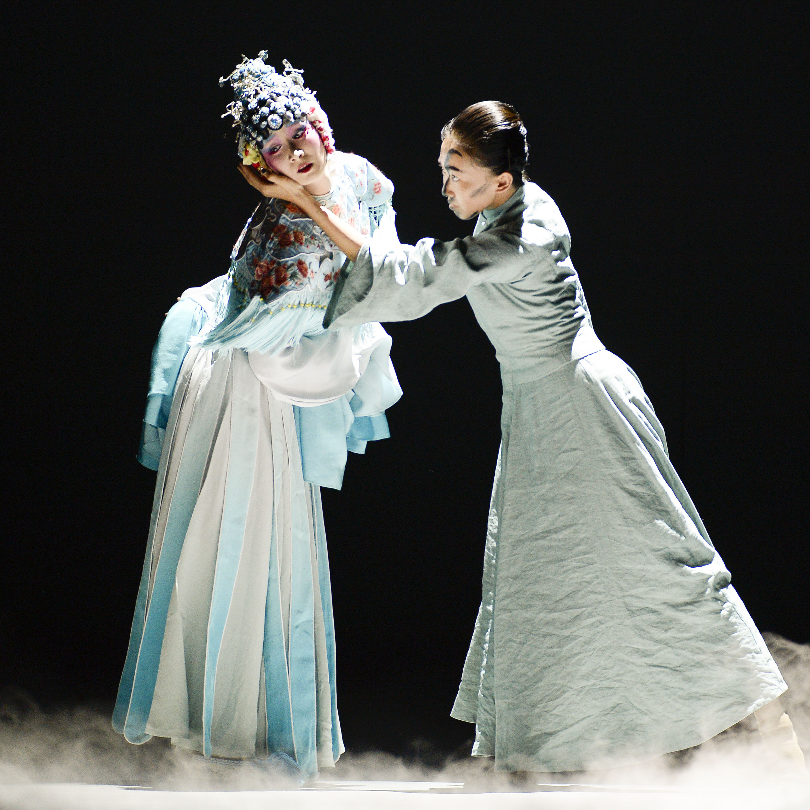
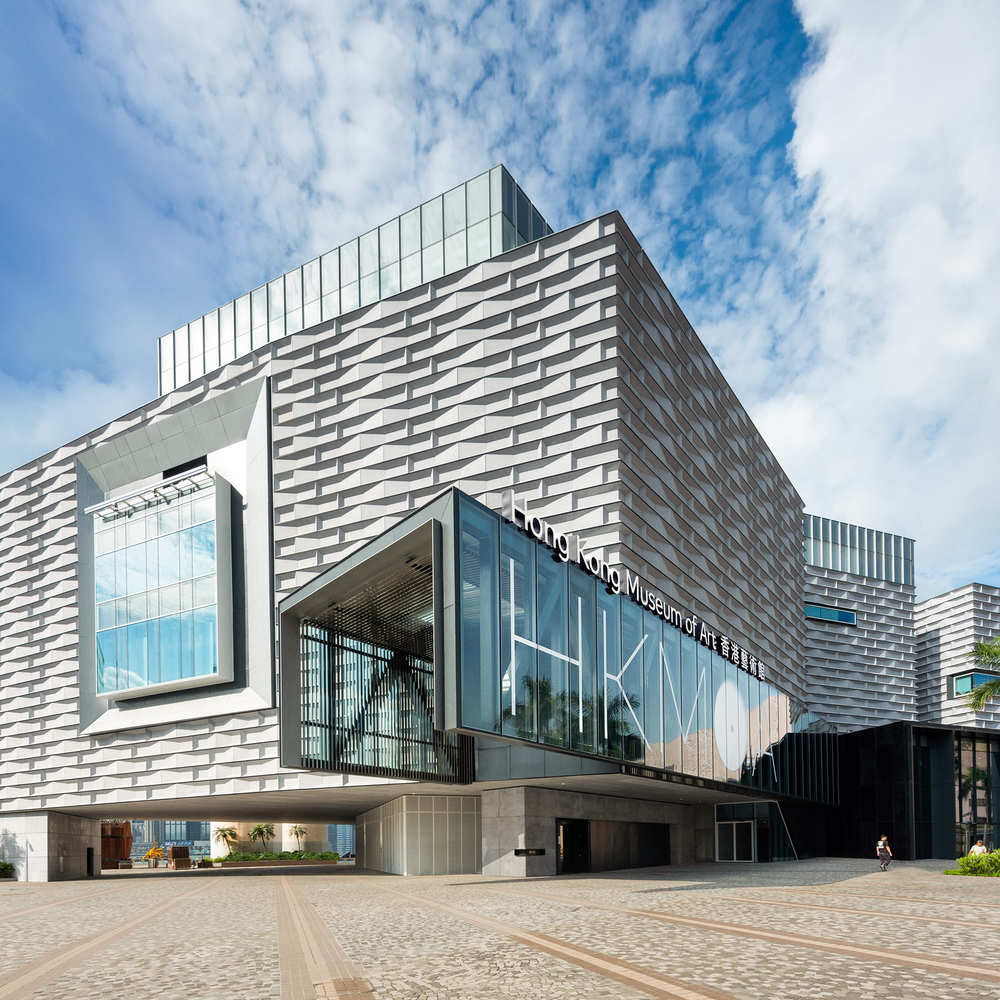
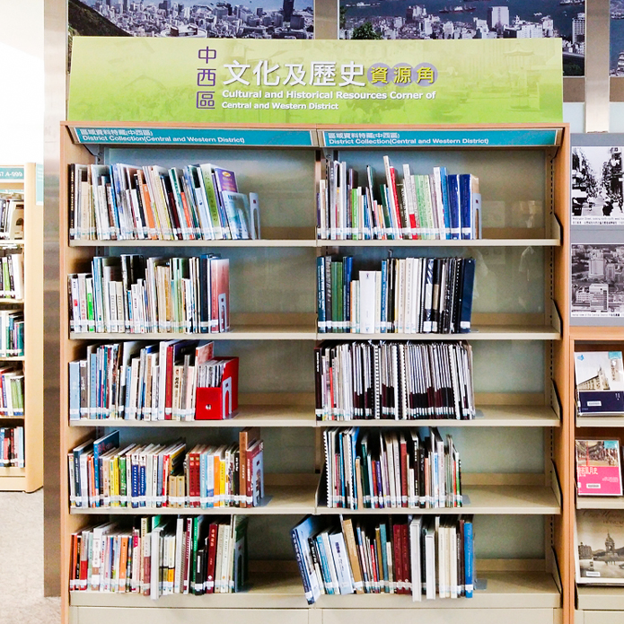

主頁 > 莘莘入場：學校文化日計劃
- 引言
- 計劃目標
- 目標對象
- 甄選準則
- 費用
- 申請方法
- 常見問題
- 查詢
引言
康樂及文化事務署（康文署）一直致力為學界提供多姿多彩的文化藝術教育節目及活動，以擴闊同學的學習經歷。自2001/02學年起推行的「學校文化日計劃」，更是廣受師生及家長歡迎。過去20多年，曾參與的學校逾1
160間，參與人次超過190萬。2020年，新冠肺炎肆虐，學校上課受影響，儘管如此，不少學校仍非常支持文化日的活動，積極參與，我們深受鼓舞。在2021/22學年，我們繼續在不同的表演場地、博物館及圖書館，舉辦各類「學校文化日」的節目及活動。
2021/22學校文化日表演藝術的節目豐富多姿，涵蓋多樣藝術形式，包括中國戲曲、舞蹈、音樂、戲劇及電影等，而受疫情影響而未能如期在2020/21學年上演的節目，亦會安排在2021/22學年演出。博物館及圖書館的活動會繼續以趣味與知識並重，動靜兼備，題材廣泛。此外，我們亦會選取合適的節目，於其中為特殊學校提供藝術通達服務，讓更多同學能參與，促進藝術共融。在2021/22學年，我們亦為幼稚園生特別設計趣味與互動元素兼備的活動，從小培養學童對文化藝術的興趣。
為優化申請程序及加強與學校的溝通，2021/22學年，我們有一個新突破，我們將會推出全新網絡「藝文共享：全港學校藝文平台」，將以往學校報名參加各活動的程序，以全電子化進行，透過這個平台，我們向各學校發放節目資訊，學校向我們表達意見，亦可全面電子化，相信這平台會為我們於推廣文化藝術的工作，帶來更佳成效。若你尚未登記加入「藝文共享：全港學校藝文平台」，請盡快登入網址https://eform.one.gov.hk/form/lcs105/tc/進行註冊登記，以享這平台帶來更方便快捷的申請程序。今年的「學校文化日計劃」將帶來超過600場的節目及活動，而九成以上學校可免費參加。誠邀全港學校，尤其是從未參與本計劃的學校，踴躍參加，引領同學走出校園，放眼藝術文化多姿釆的世界。
「學校文化日計劃」承蒙教育局支持，謹此致謝。
節目詳情
2021/22 莘莘入場：學校文化日計劃
-  表演藝術活動
-  博物館及視覺藝術活動
-  圖書館活動